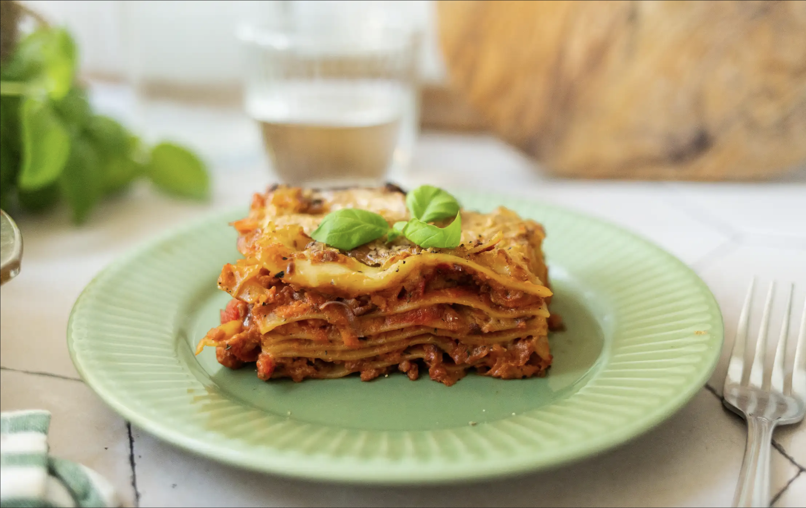
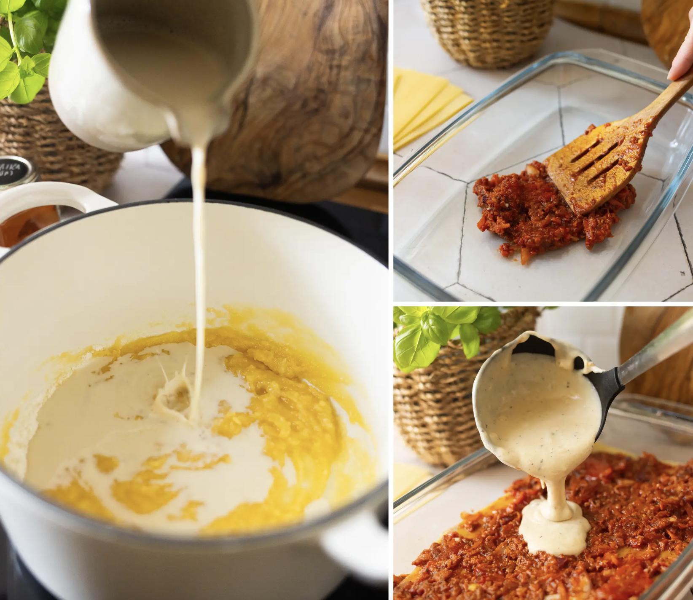

Vegan Italian Lasagna

Healthy vegan and delicious Lasagna
A Lasagna without meat? Yes! And this Recipe is also from an Italian Nonna!
Without a doubt, this Lasagna will be your new favorite Dish
Ingredients
Bolognese Sauce
- 2-3 tbsp olive oil
- 1 lbs (500 g) vegan ground beef
- 3 cloves of garlic
- 1 large onion, chopped
- 2 carrots, chopped
- 2 stalks of celery, chopped
- ½ cup (120 ml) red wine
- 14 oz (400 g) tomato passata
- 14 oz (400 g) chopped tomatoes
- 2 tbsp tomato paste
- 1 tbsp Italian herbs mixture of oregano, basil, thyme
- salt and pepper to taste
Further Ingredients
- 9-12 lasagna sheets no-boil or oven-ready
Bechamel Sauce
- 2 tbsp (30 g) vegan butter
- 2 tbsp (30 g) flour
- 2 cups (500 ml) soy milk or other unsweetened plant milk
- salt and pepper to taste
- 1 pinch of nutmeg optional
- 2 tbsp nutritional yeast or vegan parmesan, optional
Toppings (Optional)
- vegan cheese
- vegan parmesan
- fresh basil
Steps

- Heat 1-2 tablespoons of oil in a non-stick pan and fry the vegan ground beef according to package directions until crumbly. Then set aside.
- Heat the remaining oil in a large deep pan or pot. Add the onions, carrots and celery and sauté for 2-3 minutes until the onions are translucent. Then add the garlic and sauté for 30 seconds. Next, add tomato paste and Italian herbs and sauté for a few seconds.
- Now stir in the vegan ground beef. Then deglaze with red wine and let it boil down briefly. Now stir in chopped tomatoes and tomato passata, season with a little salt and pepper and simmer the Bolognese sauce for about 15 minutes with a lid on it until it has thickened well. Taste and adjust seasonings as needed and allow to cool slightly.
- Melt the vegan butter in a saucepan over medium heat. Then whisk in the flour and sweat for 1 minute, stirring constantly. Now slowly add the soy milk and bring to a boil, continuing to stir until the sauce thickens. Season to taste with salt, pepper, nutmeg and nutritional yeast flakes. Then remove from heat and set aside.
- Preheat the oven to 392 °F (200 °C). Brush a baking dish with a little oil.


- First spread a thin layer of Bolognese sauce on the bottom of the baking dish. Then alternate layers of lasagna sheets, bolognese and béchamel on top. Finish with a thick layer of béchamel sauce. Finally, sprinkle with some vegan grated cheese and /or vegan Parmesan and bake the lasagna for about 45 minutes in the preheated oven (if the top browns too quickly, you can cover it with parchment paper or aluminum foil).

- Let the lasagna cool down a bit while it becomes more sliceable. Then garnish with fresh basil and enjoy!